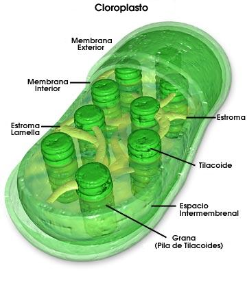

Los cloroplastos son los organelos en donde se realiza la fotosíntesis. Están formados por un sistema de membranas interno en donde se encuentran ubicados los sitios en que se realiza cada una de las partes del proceso fotosintético.
En los organismos procariontes fotosintéticos,
el proceso se lleva a cabo asociado a ciertas prolongaciones hacia
el interior de la célula de la membrana plasmática.